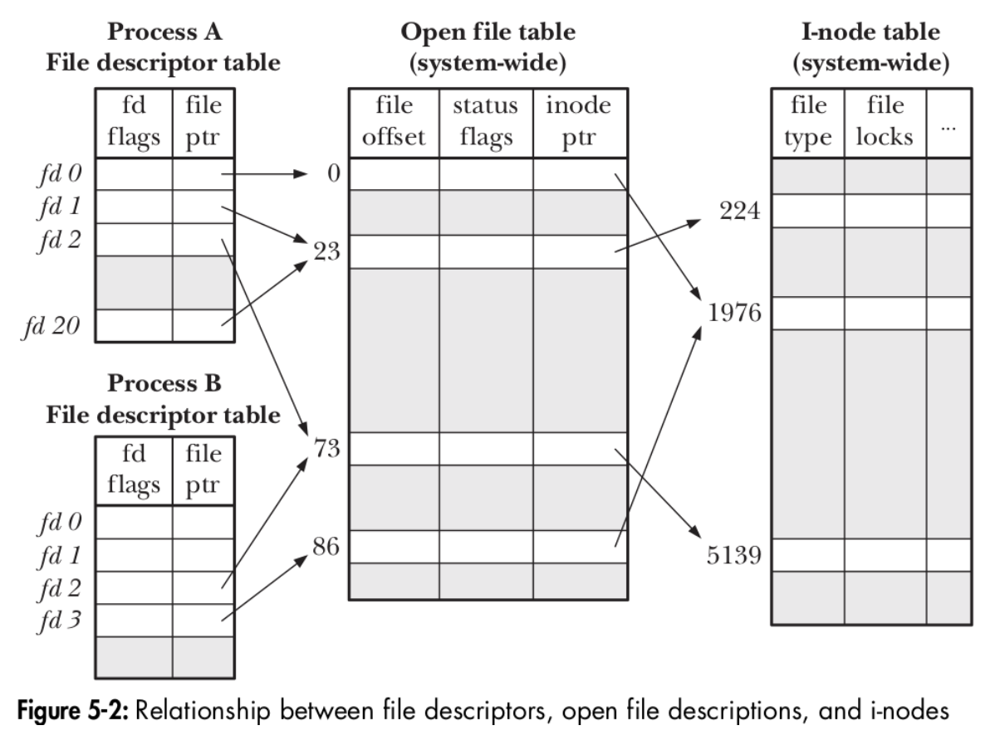

前言
說來慚愧，一直以來都在跟 Linux 打交道，也瞭解 everything in unix is a file 的概念，卻沒有真的好好理解 file descriptor 的基本結構是怎樣，但是在知乎上面看到這篇 Linux file descriptor 演進史，讓我對於他為什麼長這樣有更進一步的認識。(其實原本想找找英文資料，不過這篇講歷史的還蠻清楚的)
基本上這篇文章會筆記目前新版的 file descriptor 結構，也會延伸一些其他看到的資料，基於我對於 Linux kernel 並不是專家，如果有錯的地方希望大家能夠指正。
file descriptor
file descriptor (fd) 基本上是一層介面，可以讓我們去操作 file 和其他 input/output interface (例如 pipe & socket)。
kernel 內的基本結構
- 每個 process 裡面包含 file descriptor 的 table。
- file descriptor 其實只是個指標，指向系統層面 (system-wide) 的 openfile table 的 entry ，而這個 openfile table 在 Posix 裡面稱為 open file description。
- fd_table 內的 inode_ptr 在去指向 i-node table 內的 entry。
file descriptor 和 file 之間的關係並不是一對一的。

圖從這個投影片來的 lusp_fileio_slides.pdf，另外要大推作者的書 The Linux Programming Interface，非常值得收藏
對應的 data structure source code
- process task_struct 裡面有 file_struct 成員，基本上需要從這個 file_struct 裡面找到對應的 file descriptor。file_struct 的成員原本是直接在 task_struct 內的，現在將它獨立起來，並用指標去存取，主要是因為 linux 在支援 thread 之後，需要以 task_struct 為 thread 單位，可以透過指標共用 file_struct 這種資源。
1
2
3
4
5struct task_struct {
...
struct files_struct *files;
...
} - files_struct 裡面可以找到 per process fdtable (file descriptor table)，其中使用了很厲害的 RCU 技術，主要是針對讀多寫少的情況下，提升存取寫入 fdtable 效能。
(struct fdtable in include/linux/fdtable.h)1
2
3
4
5
6
7
8
9
10
11
12
13
14
15
16
17
18
19
20
21
22
23
24
25
26
27
28
29struct files_struct {
/*
* read mostly part
*/
atomic_t count;
bool resize_in_progress;
wait_queue_head_t resize_wait;
struct fdtable __rcu *fdt;
struct fdtable fdtab;
/*
* written part on a separate cache line in SMP
*/
spinlock_t file_lock ____cacheline_aligned_in_smp;
unsigned int next_fd;
unsigned long close_on_exec_init[1];
unsigned long open_fds_init[1];
unsigned long full_fds_bits_init[1];
struct file __rcu * fd_array[NR_OPEN_DEFAULT];
};
struct fdtable {
unsigned int max_fds;
struct file __rcu **fd; /* current fd array */
unsigned long *close_on_exec;
unsigned long *open_fds;
unsigned long *full_fds_bits;
struct rcu_head rcu;
}; - open file table 也稱為 open file descriptions，是系統層級的 table (https://github.com/torvalds/linux/blob/master/include/linux/fs.h#L921)，這個 struct 定義了一些蠻重要的資料像是 file_offset, file_status, 還有最重要的 inode_ptr 去指向對應的 inode。
1
2
3
4
5
6
7
8struct file {
union {
struct llist_node fu_llist;
struct rcu_head fu_rcuhead;
} f_u;
struct path f_path;
struct inode *f_inode; /* cached value */
const struct file_operations *f_op; - open file table 在指向 system-wide 的 inode-table (https://github.com/torvalds/linux/blob/master/include/linux/fs.h#L615)，其中的 i_mode 就記錄了對應的是哪一種檔案類型。
1
2
3
4
5
6struct inode {
umode_t i_mode;
unsigned short i_opflags;
kuid_t i_uid;
kgid_t i_gid;
unsigned int i_flags;
一些常見的 fd 操作
- 同一個 process 內通常透過
dup()ordup2()可以複製 file descriptor，而兩個 fd 就可以指向同一筆 openfile entry (也就是同一個 file) - 不同 process 透過
fork()也會拿到各自的 file descriptor，去指向同一筆 openfile entry - 不同 process 去開啟同一份檔案，會用各自的 file descriptor 指向不同的 openfile entry，但最後會指向同一份 inode
其他的經驗分享
在沒有了解 fd 的時候其實在寫程式上面犯了不少錯，像是在曾經在寫一個 socket programming 時，在 main process 內 fork child process ，但是卻沒有使用 close-on-exec flag ，所以把 main process 打開的 fd 也帶過去給 child，所以就算在 main process 去 close socket，對於那個被 child 抓住的 socket 還是沒被釋放，所以就看到前面的 LB 說後端的連線數量沒有下降，接著因為 rate limiting 的緣故，就把外面的連線給擋住了，而其實這時候後端還閒著很，這就是不熟悉 fd 行為而種下的雷，在理解了 fd 後，接著會再做一些筆記來談談 epoll & scm_right 之類的東西怎麼運作的，了解 fd 對於我們寫程式真的蠻重要的啊!
Reference:
圖片從https://unsplash.com/photos/o6GEPQXnqMY